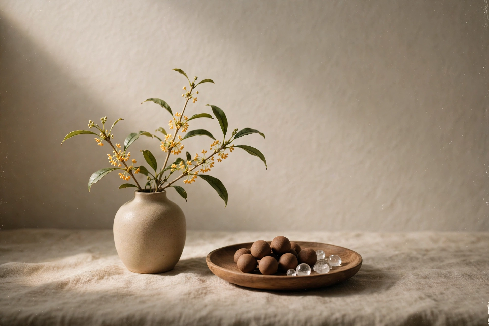

不用点的香
说起香，大多数人先想到一炷烟。
要点燃，要有炉，要等烟升起来，香才算开始。可有一类香偏偏不走这条路：不点火，不冒烟，串起来戴在腕上，人走动，它就跟着走，人抬手，它就近了。
它叫合香珠。仙做的，就是这种香。
壹 · 香，不都是烧出来的
中国人用香，大体有两路。
一路是焚。香材点燃或隔火慢熏，香气散进一间屋子，是待客的，是供奉的，也是一个人独处时的仪式。线香、盘香、香篆，都在这一路里。
另一路是佩。不烧，把香做小、做近，直接带在身上。香囊、香牌、香珠，都在这一路里。香气不散给满座，只留给自己，和挨得很近的人。
合香珠走的是第二路。它是把沉香、檀香这些香材研细，按方调和，手工搓成珠，阴干定型。香不在烟里，在珠子里。

贰 · 宋人早就把香串在腕上
这件事不是今人的发明。
宋代传为陈敬所撰的《陈氏香谱》里，记着一道“木犀香珠”的做法：木犀就是桂花，取半开的桂蕊，去蒂，碾成浆，榨去水分，再细细捣匀，搓成小球，当中刺一个孔，几番晾晒风干，才成珠。当时的人把十几颗这样的珠子串起来，套在腕上，像戴一只镯子。
南宋范成大在《桂海虞衡志》里写得更生动。他说岭南一带的香珠，是“以泥香捏成小巴豆状，琉璃珠间之，彩丝贯之”——香珠和琉璃珠一颗间一颗，用彩丝串起来，当地女子都爱戴。
你看，八九百年前，香珠和亮晶晶的珠子同串、戴在女子腕间，就已经是寻常风景了。仙把合香珠和天然晶石串在一起，不是一时兴起的拼凑，是把这件旧事，重新做回日常。
叁 · 不点，为什么也闻得到
因为香材本身，就是香的。
沉香的醇、檀香的甜、桂花的清，来自香材里天生的芳香气息，不靠火也能慢慢散出来，只是慢，慢到要有耐心。研成细粉、调和成珠之后，香气收在珠体里，一点一点往外走。
戴上之后还有两个帮手。一是体温，珠子贴着腕，暖意把香烘得清楚一点；二是指尖，无意中捻一捻，转一转，那一缕就又浮上来了。
所以合香珠的香，是近身的香。满座皆闻是焚香的气派，若有似无、只够自己闻见，是香珠的分寸。
焚香，是把香送到空气里；香珠，是把香留在自己身上。
本文史实参考：《桂海虞衡志》（宋 · 范成大）、《陈氏香谱》（传宋 · 陈敬）所载木犀香珠制法。
← 回到仙日常